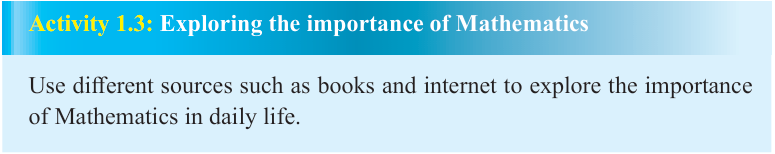
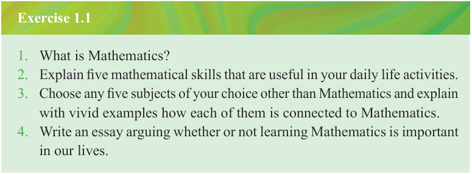

Activity 1.3: Exploring the importance of Mathematics
Use different sources such as books and internet to explore the importance of Mathematics in daily life.

Exercise 1.1
1. What is Mathematics?
2. Explain five mathematical skills that are useful in your daily life activities.
3. Choose any five subjects of your choice other than Mathematics and explain with vivid examples how each of them is connected to Mathematics.
4. Write an essay arguing whether or not learning Mathematics is important in our lives.